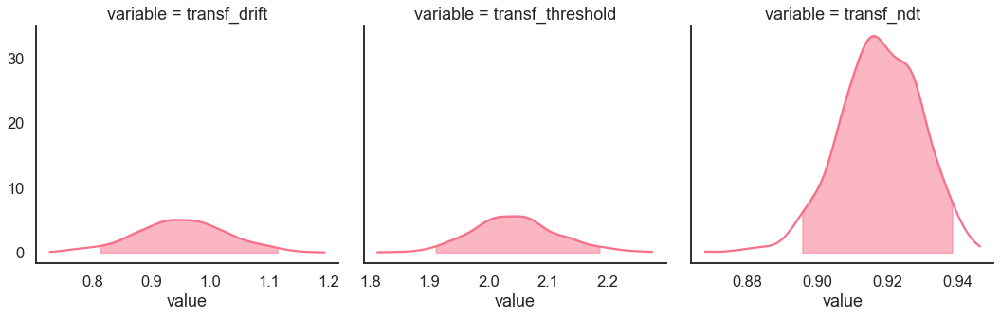
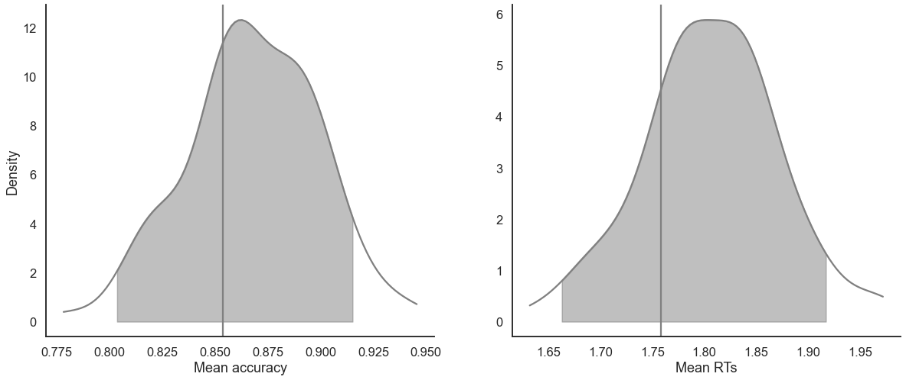
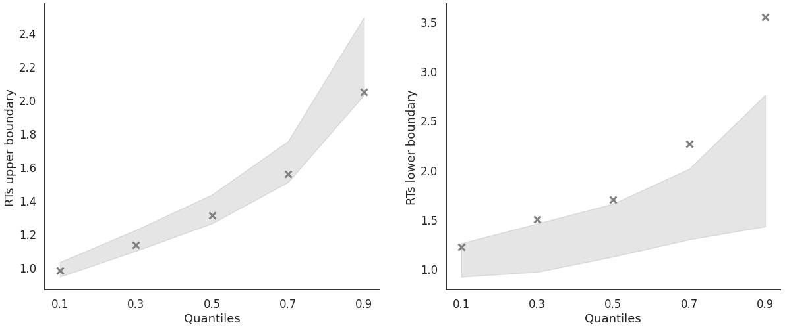
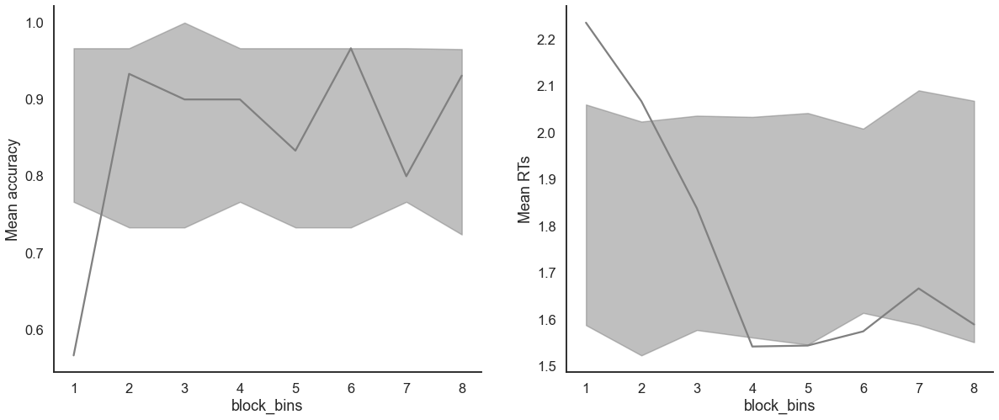
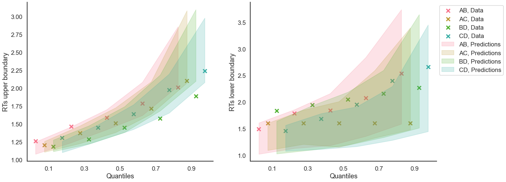

Fit the DDM on individual data¶
[1]:
import rlssm
import pandas as pd
import os
Import the data¶
[2]:
par_path = os.path.abspath(os.path.join(os.getcwd(), os.pardir, os.pardir))
data_path = os.path.join(par_path, 'data/data_experiment.csv')
data = pd.read_csv(data_path, index_col=0)
data = data[data.participant == 20].reset_index(drop=True) # Only select 1 participant
data.head()
[2]:
| participant | block_label | trial_block | f_cor | f_inc | cor_option | inc_option | times_seen | rt | accuracy | |
|---|---|---|---|---|---|---|---|---|---|---|
| 0 | 20 | 1 | 1 | 46 | 46 | 4 | 2 | 1 | 2.574407 | 1 |
| 1 | 20 | 1 | 2 | 60 | 33 | 4 | 2 | 2 | 1.952774 | 1 |
| 2 | 20 | 1 | 3 | 32 | 44 | 2 | 1 | 2 | 2.074999 | 0 |
| 3 | 20 | 1 | 4 | 56 | 40 | 4 | 2 | 3 | 2.320916 | 0 |
| 4 | 20 | 1 | 5 | 34 | 32 | 2 | 1 | 3 | 1.471107 | 1 |
Fit¶
[4]:
# sampling parameters
n_iter = 1000
n_chains = 2
n_thin = 1
[5]:
model_fit = model.fit(
data,
thin = n_thin,
iter = n_iter,
chains = n_chains,
pointwise_waic=False,
verbose = False)
Fitting the model using the priors:
drift_priors {'mu': 1, 'sd': 5}
threshold_priors {'mu': 0, 'sd': 5}
ndt_priors {'mu': 0, 'sd': 5}
WARNING:pystan:Maximum (flat) parameter count (1000) exceeded: skipping diagnostic tests for n_eff and Rhat.
To run all diagnostics call pystan.check_hmc_diagnostics(fit)
Checks MCMC diagnostics:
n_eff / iter looks reasonable for all parameters
0.0 of 1000 iterations ended with a divergence (0.0%)
0 of 1000 iterations saturated the maximum tree depth of 10 (0.0%)
E-BFMI indicated no pathological behavior
get Rhat¶
[6]:
model_fit.rhat
[6]:
| rhat | variable | |
|---|---|---|
| 0 | 1.002939 | drift |
| 1 | 1.004659 | threshold |
| 2 | 1.005173 | ndt |
get wAIC¶
[7]:
model_fit.waic
[7]:
{'lppd': -224.544973536372,
'p_waic': 4.223537903846255,
'waic': 457.5370228804365,
'waic_se': 35.60746504526109}
Posteriors¶
[8]:
model_fit.samples.describe()
[8]:
| chain | draw | transf_drift | transf_threshold | transf_ndt | |
|---|---|---|---|---|---|
| count | 1000.00000 | 1000.000000 | 1000.000000 | 1000.000000 | 1000.000000 |
| mean | 0.50000 | 249.500000 | 0.951527 | 2.045126 | 0.917638 |
| std | 0.50025 | 144.409501 | 0.077108 | 0.071808 | 0.011498 |
| min | 0.00000 | 0.000000 | 0.727742 | 1.812423 | 0.867889 |
| 25% | 0.00000 | 124.750000 | 0.901608 | 1.997233 | 0.910352 |
| 50% | 0.50000 | 249.500000 | 0.951500 | 2.043214 | 0.917820 |
| 75% | 1.00000 | 374.250000 | 1.002131 | 2.086384 | 0.926001 |
| max | 1.00000 | 499.000000 | 1.193748 | 2.275688 | 0.946229 |
[9]:
import seaborn as sns
sns.set(context = "talk",
style = "white",
palette = "husl",
rc={'figure.figsize':(15, 8)})
[10]:
model_fit.plot_posteriors(height=5, show_intervals="HDI", alpha_intervals=.05);

Posterior predictives¶
Ungrouped¶
[11]:
pp = model_fit.get_posterior_predictives_df(n_posterior_predictives=100)
pp
[11]:
| variable | rt | ... | accuracy | ||||||||||||||||||
|---|---|---|---|---|---|---|---|---|---|---|---|---|---|---|---|---|---|---|---|---|---|
| trial | 1 | 2 | 3 | 4 | 5 | 6 | 7 | 8 | 9 | 10 | ... | 231 | 232 | 233 | 234 | 235 | 236 | 237 | 238 | 239 | 240 |
| sample | |||||||||||||||||||||
| 1 | 1.179975 | 1.259975 | 2.517975 | 2.305975 | 2.064975 | 2.762975 | 1.163975 | 1.745975 | 1.118975 | 2.103975 | ... | 1.0 | 1.0 | 1.0 | 1.0 | 1.0 | 1.0 | 1.0 | 1.0 | 1.0 | 1.0 |
| 2 | 1.482660 | 1.304660 | 3.035660 | 1.299660 | 5.320660 | 1.363660 | 4.454660 | 1.459660 | 2.523660 | 2.634660 | ... | 1.0 | 1.0 | 1.0 | 1.0 | 1.0 | 1.0 | 1.0 | 1.0 | 1.0 | 1.0 |
| 3 | 3.800896 | 1.877896 | 1.563896 | 1.224896 | 1.124896 | 3.377896 | 1.439896 | 1.340896 | 1.399896 | 1.181896 | ... | 1.0 | 1.0 | 1.0 | 1.0 | 1.0 | 1.0 | 1.0 | 1.0 | 1.0 | 1.0 |
| 4 | 2.988164 | 2.331164 | 1.529164 | 1.133164 | 2.879164 | 2.045164 | 1.305164 | 1.428164 | 1.355164 | 1.192164 | ... | 1.0 | 1.0 | 1.0 | 1.0 | 0.0 | 1.0 | 1.0 | 1.0 | 1.0 | 0.0 |
| 5 | 1.508560 | 1.292560 | 1.200560 | 2.301560 | 1.193560 | 2.334560 | 1.980560 | 1.432560 | 1.219560 | 2.527560 | ... | 1.0 | 1.0 | 1.0 | 1.0 | 0.0 | 1.0 | 0.0 | 1.0 | 1.0 | 1.0 |
| ... | ... | ... | ... | ... | ... | ... | ... | ... | ... | ... | ... | ... | ... | ... | ... | ... | ... | ... | ... | ... | ... |
| 96 | 1.233225 | 3.160225 | 1.278225 | 1.740225 | 1.298225 | 1.138225 | 1.567225 | 1.297225 | 1.440225 | 1.222225 | ... | 1.0 | 1.0 | 1.0 | 1.0 | 0.0 | 0.0 | 1.0 | 1.0 | 1.0 | 0.0 |
| 97 | 1.310389 | 1.701389 | 1.346389 | 1.714389 | 2.045389 | 1.457389 | 1.458389 | 2.228389 | 1.847389 | 1.245389 | ... | 1.0 | 1.0 | 1.0 | 1.0 | 1.0 | 1.0 | 1.0 | 1.0 | 1.0 | 1.0 |
| 98 | 2.503255 | 1.490255 | 1.487255 | 2.730255 | 2.163255 | 1.087255 | 2.749255 | 1.549255 | 1.639255 | 1.343255 | ... | 1.0 | 1.0 | 1.0 | 1.0 | 1.0 | 1.0 | 1.0 | 1.0 | 0.0 | 1.0 |
| 99 | 1.875819 | 1.231819 | 1.131819 | 1.313819 | 2.089819 | 1.671819 | 1.479819 | 1.257819 | 1.943819 | 1.104819 | ... | 1.0 | 1.0 | 1.0 | 1.0 | 1.0 | 1.0 | 0.0 | 1.0 | 1.0 | 1.0 |
| 100 | 1.333983 | 3.515983 | 1.304983 | 1.599983 | 1.364983 | 1.925983 | 1.811983 | 1.350983 | 1.178983 | 1.441983 | ... | 1.0 | 1.0 | 1.0 | 1.0 | 1.0 | 1.0 | 1.0 | 1.0 | 1.0 | 1.0 |
100 rows × 480 columns
[12]:
pp_summary = model_fit.get_posterior_predictives_summary(n_posterior_predictives=100)
pp_summary
[12]:
| mean_accuracy | mean_rt | skewness | quant_10_rt_low | quant_30_rt_low | quant_50_rt_low | quant_70_rt_low | quant_90_rt_low | quant_10_rt_up | quant_30_rt_up | quant_50_rt_up | quant_70_rt_up | quant_90_rt_up | |
|---|---|---|---|---|---|---|---|---|---|---|---|---|---|
| sample | |||||||||||||
| 1 | 0.891667 | 1.763025 | 1.842064 | 1.134475 | 1.285975 | 1.636475 | 1.825475 | 2.060975 | 1.163275 | 1.322375 | 1.586475 | 1.959275 | 2.664975 |
| 2 | 0.866667 | 1.788194 | 1.994050 | 1.157860 | 1.477660 | 1.731160 | 2.136660 | 2.601560 | 1.133160 | 1.363960 | 1.651160 | 1.908260 | 2.577460 |
| 3 | 0.891667 | 1.753208 | 1.778375 | 1.238896 | 1.466396 | 1.898896 | 1.998396 | 2.197896 | 1.144596 | 1.343496 | 1.550396 | 1.963696 | 2.601196 |
| 4 | 0.883333 | 1.779364 | 1.463521 | 1.183664 | 1.445264 | 1.546164 | 1.995764 | 2.671664 | 1.163364 | 1.345164 | 1.549664 | 1.947164 | 2.591664 |
| 5 | 0.879167 | 1.827126 | 1.876930 | 1.200560 | 1.314160 | 1.545560 | 1.878560 | 2.679560 | 1.202560 | 1.402560 | 1.611560 | 1.897560 | 2.713560 |
| ... | ... | ... | ... | ... | ... | ... | ... | ... | ... | ... | ... | ... | ... |
| 96 | 0.887500 | 1.761817 | 1.910651 | 1.213225 | 1.391425 | 1.582225 | 1.706425 | 2.179425 | 1.160825 | 1.364025 | 1.627225 | 1.929225 | 2.590225 |
| 97 | 0.870833 | 1.685927 | 1.293942 | 1.197389 | 1.446389 | 1.592389 | 1.861389 | 2.003389 | 1.182189 | 1.322189 | 1.558389 | 1.759189 | 2.508789 |
| 98 | 0.858333 | 1.799713 | 1.913578 | 1.241555 | 1.497555 | 1.672755 | 2.257755 | 2.936855 | 1.176755 | 1.347755 | 1.582755 | 1.902755 | 2.566255 |
| 99 | 0.833333 | 1.720603 | 1.896240 | 1.184919 | 1.388419 | 1.601319 | 1.956319 | 2.288819 | 1.155419 | 1.360519 | 1.575819 | 1.855119 | 2.411919 |
| 100 | 0.879167 | 1.676004 | 1.550239 | 1.184383 | 1.463783 | 1.601983 | 1.967583 | 2.397983 | 1.168983 | 1.345983 | 1.542983 | 1.788983 | 2.392983 |
100 rows × 13 columns
[13]:
model_fit.plot_mean_posterior_predictives(n_posterior_predictives=100, figsize=(20,8), show_intervals='HDI');

[14]:
model_fit.plot_quantiles_posterior_predictives(n_posterior_predictives=100, kind='shades');

Grouped¶
[15]:
import numpy as np
[16]:
# Define new grouping variables, in this case, for the different choice pairs, but any grouping var can do
data['choice_pair'] = 'AB'
data.loc[(data.cor_option == 3) & (data.inc_option == 1), 'choice_pair'] = 'AC'
data.loc[(data.cor_option == 4) & (data.inc_option == 2), 'choice_pair'] = 'BD'
data.loc[(data.cor_option == 4) & (data.inc_option == 3), 'choice_pair'] = 'CD'
data['block_bins'] = pd.cut(data.trial_block, 8, labels=np.arange(1, 9))
[17]:
model_fit.get_grouped_posterior_predictives_summary(
grouping_vars=['block_label', 'choice_pair'],
quantiles=[.3, .5, .7],
n_posterior_predictives=100)
[17]:
| mean_accuracy | mean_rt | skewness | quant_30_rt_low | quant_30_rt_up | quant_50_rt_low | quant_50_rt_up | quant_70_rt_low | quant_70_rt_up | |||
|---|---|---|---|---|---|---|---|---|---|---|---|
| block_label | choice_pair | sample | |||||||||
| 1 | AB | 1 | 0.85 | 1.786375 | 0.194693 | 1.754775 | 1.541975 | 2.107975 | 1.719975 | 2.122775 | 1.933375 |
| 2 | 0.80 | 1.705360 | 1.818448 | 1.248160 | 1.336160 | 1.412660 | 1.444660 | 1.686860 | 1.770660 | ||
| 3 | 0.95 | 1.817246 | 0.115157 | 1.509896 | 1.563496 | 1.509896 | 1.883896 | 1.509896 | 2.072496 | ||
| 4 | 1.00 | 1.908614 | 1.600054 | NaN | 1.523164 | NaN | 1.694664 | NaN | 2.021064 | ||
| 5 | 0.95 | 1.746560 | 0.850843 | 2.117560 | 1.448560 | 2.117560 | 1.718560 | 2.117560 | 1.867160 | ||
| ... | ... | ... | ... | ... | ... | ... | ... | ... | ... | ... | ... |
| 3 | CD | 96 | 0.80 | 1.657825 | 0.847885 | 1.694525 | 1.243725 | 1.865225 | 1.355725 | 2.052525 | 1.752225 |
| 97 | 0.95 | 1.656689 | 1.547319 | 1.506389 | 1.368189 | 1.506389 | 1.441389 | 1.506389 | 1.693389 | ||
| 98 | 0.95 | 1.609455 | 0.471516 | 1.422255 | 1.313855 | 1.422255 | 1.554255 | 1.422255 | 1.836055 | ||
| 99 | 0.85 | 1.699369 | 0.865524 | 2.108219 | 1.264219 | 2.147819 | 1.561819 | 2.535019 | 1.810019 | ||
| 100 | 0.95 | 1.618533 | 0.499902 | 1.057983 | 1.308783 | 1.057983 | 1.556983 | 1.057983 | 1.942183 |
1200 rows × 9 columns
[18]:
model_fit.get_grouped_posterior_predictives_summary(
grouping_vars=['block_bins'],
quantiles=[.3, .5, .7],
n_posterior_predictives=100)
[18]:
| mean_accuracy | mean_rt | skewness | quant_30_rt_low | quant_30_rt_up | quant_50_rt_low | quant_50_rt_up | quant_70_rt_low | quant_70_rt_up | ||
|---|---|---|---|---|---|---|---|---|---|---|
| block_bins | sample | |||||||||
| 1 | 1 | 0.766667 | 1.822608 | 1.617771 | 1.503575 | 1.258375 | 1.686975 | 1.688975 | 1.991575 | 1.995575 |
| 2 | 0.866667 | 1.703960 | 2.065860 | 1.639160 | 1.342660 | 1.702160 | 1.522660 | 1.719860 | 1.851660 | |
| 3 | 0.833333 | 1.699829 | 0.993305 | 1.479496 | 1.346696 | 2.021896 | 1.500896 | 2.309096 | 1.709296 | |
| 4 | 0.866667 | 1.805464 | 2.768418 | 1.201264 | 1.336664 | 1.416664 | 1.456164 | 1.675764 | 1.880164 | |
| 5 | 0.933333 | 1.957560 | 1.354595 | 2.626960 | 1.452460 | 3.026560 | 1.659060 | 3.426160 | 2.174660 | |
| ... | ... | ... | ... | ... | ... | ... | ... | ... | ... | ... |
| 8 | 96 | 0.833333 | 1.845325 | 1.067375 | 1.519425 | 1.583025 | 1.888225 | 1.744225 | 1.921825 | 2.078625 |
| 97 | 0.966667 | 1.798956 | 0.957869 | 1.264389 | 1.561589 | 1.264389 | 1.702389 | 1.264389 | 1.975189 | |
| 98 | 0.900000 | 1.684521 | 1.868615 | 1.455855 | 1.415855 | 1.598255 | 1.578255 | 1.626255 | 1.935455 | |
| 99 | 0.633333 | 1.617619 | 1.177833 | 1.281819 | 1.405819 | 1.360819 | 1.842819 | 1.371819 | 1.904219 | |
| 100 | 0.900000 | 1.624883 | 2.170855 | 1.344383 | 1.270183 | 1.431983 | 1.428983 | 1.691583 | 1.576383 |
800 rows × 9 columns
[19]:
model_fit.plot_mean_grouped_posterior_predictives(grouping_vars=['block_bins'],
n_posterior_predictives=100,
figsize=(20,8));

[20]:
model_fit.plot_quantiles_grouped_posterior_predictives(
n_posterior_predictives=100,
grouping_var='choice_pair',
kind='shades',
quantiles=[.1, .3, .5, .7, .9]);
